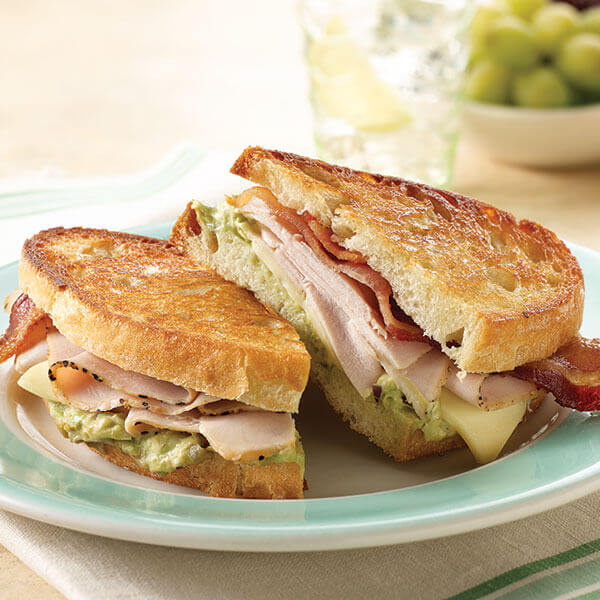

LUNCH: TURKEY SANDWICH
This classic turkey sandwich is fresh, flavorful, and can be thrown together quickly with just a few simple ingredients. Packed with turkey, crispy bacon, avocado spread, and cheddar cheese, it's a lunch that will leave you feeling totally satisfied.

Image Credit: "Grilled California Turkey Bistro Sandwich" by Land O'Lakes at https://www.landolakes.com/recipe/7899/grilled-california-turkey-bistro-sandwich/.